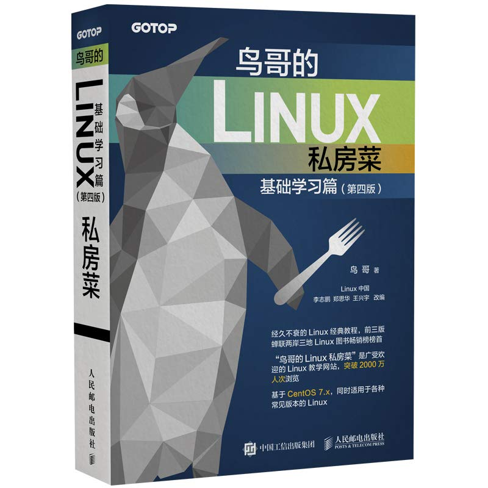
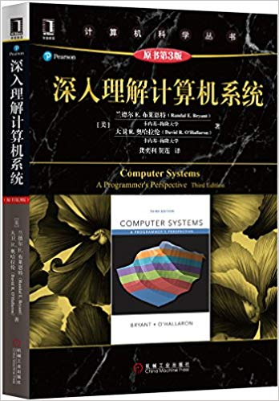
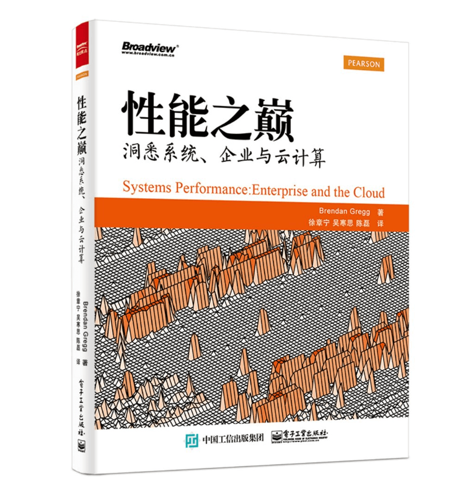

- 00 开篇词 别再让Linux性能问题成为你的绊脚石.md.html
- 01 如何学习Linux性能优化？.md.html
- 02 基础篇：到底应该怎么理解“平均负载”？.md.html
- 03 基础篇：经常说的 CPU 上下文切换是什么意思？（上）.md.html
- 04 基础篇：经常说的 CPU 上下文切换是什么意思？（下）.md.html
- 05 基础篇：某个应用的CPU使用率居然达到100%，我该怎么办？.md.html
- 06 案例篇：系统的 CPU 使用率很高，但为啥却找不到高 CPU 的应用？.md.html
- 07 案例篇：系统中出现大量不可中断进程和僵尸进程怎么办？（上）.md.html
- 08 案例篇：系统中出现大量不可中断进程和僵尸进程怎么办？（下）.md.html
- 09 基础篇：怎么理解Linux软中断？.md.html
- 10 案例篇：系统的软中断CPU使用率升高，我该怎么办？.md.html
- 11 套路篇：如何迅速分析出系统CPU的瓶颈在哪里？.md.html
- 12 套路篇：CPU 性能优化的几个思路.md.html
- 13 答疑（一）：无法模拟出 RES 中断的问题，怎么办？.md.html
- 14 答疑（二）：如何用perf工具分析Java程序？.md.html
- 15 基础篇：Linux内存是怎么工作的？.md.html
- 16 基础篇：怎么理解内存中的Buffer和Cache？.md.html
- 17 案例篇：如何利用系统缓存优化程序的运行效率？.md.html
- 18 案例篇：内存泄漏了，我该如何定位和处理？.md.html
- 19 案例篇：为什么系统的Swap变高了（上）.md.html
- 20 案例篇：为什么系统的Swap变高了？（下）.md.html
- 21 套路篇：如何“快准狠”找到系统内存的问题？.md.html
- 22 答疑（三）：文件系统与磁盘的区别是什么？.md.html
- 23 基础篇：Linux 文件系统是怎么工作的？.md.html
- 24 基础篇：Linux 磁盘I_O是怎么工作的（上）.md.html
- 25 基础篇：Linux 磁盘I_O是怎么工作的（下）.md.html
- 26 案例篇：如何找出狂打日志的“内鬼”？.md.html
- 27 案例篇：为什么我的磁盘I_O延迟很高？.md.html
- 28 案例篇：一个SQL查询要15秒，这是怎么回事？.md.html
- 29 案例篇：Redis响应严重延迟，如何解决？.md.html
- 30 套路篇：如何迅速分析出系统I_O的瓶颈在哪里？.md.html
- 31 套路篇：磁盘 I_O 性能优化的几个思路.md.html
- 32 答疑（四）：阻塞、非阻塞 I_O 与同步、异步 I_O 的区别和联系.md.html
- 33 关于 Linux 网络，你必须知道这些（上）.md.html
- 34 关于 Linux 网络，你必须知道这些（下）.md.html
- 35 基础篇：C10K 和 C1000K 回顾.md.html
- 36 套路篇：怎么评估系统的网络性能？.md.html
- 37 案例篇：DNS 解析时快时慢，我该怎么办？.md.html
- 38 案例篇：怎么使用 tcpdump 和 Wireshark 分析网络流量？.md.html
- 39 案例篇：怎么缓解 DDoS 攻击带来的性能下降问题？.md.html
- 40 案例篇：网络请求延迟变大了，我该怎么办？.md.html
- 41 案例篇：如何优化 NAT 性能？（上）.md.html
- 42 案例篇：如何优化 NAT 性能？（下）.md.html
- 43 套路篇：网络性能优化的几个思路（上）.md.html
- 44 套路篇：网络性能优化的几个思路（下）.md.html
- 45 答疑（五）：网络收发过程中，缓冲区位置在哪里？.md.html
- 46 案例篇：为什么应用容器化后，启动慢了很多？.md.html
- 47 案例篇：服务器总是时不时丢包，我该怎么办？（上）.md.html
- 48 案例篇：服务器总是时不时丢包，我该怎么办？（下）.md.html
- 49 案例篇：内核线程 CPU 利用率太高，我该怎么办？.md.html
- 50 案例篇：动态追踪怎么用？（上）.md.html
- 51 案例篇：动态追踪怎么用？（下）.md.html
- 52 案例篇：服务吞吐量下降很厉害，怎么分析？.md.html
- 53 套路篇：系统监控的综合思路.md.html
- 54 套路篇：应用监控的一般思路.md.html
- 55 套路篇：分析性能问题的一般步骤.md.html
- 56 套路篇：优化性能问题的一般方法.md.html
- 57 套路篇：Linux 性能工具速查.md.html
- 58 答疑（六）：容器冷启动如何性能分析？.md.html
- 加餐（一） 书单推荐：性能优化和Linux 系统原理.md.html
- 加餐（二） 书单推荐：网络原理和 Linux 内核实现.md.html
- 用户故事 “半路出家 ”，也要顺利拿下性能优化！.md.html
- 用户故事 运维和开发工程师们怎么说？.md.html
- 结束语 愿你攻克性能难关.md.html
- 捐赠
加餐（一） 书单推荐：性能优化和Linux 系统原理
你好，我是倪朋飞。欢迎来到 Linux 性能优化专栏的加餐时间。
之前，很多同学留言让我推荐一些性能优化以及 Linux 系统原理方面的书，今天我就和你分享一些我认为不错的书。
Linux 系统原理和性能优化涉及的面很广，相关的书籍自然也很多。学习咱们专栏，你先要了解Linux 系统的工作原理，基于此，再去分析、理解各类性能瓶颈，最终找出方法、优化性能。围绕这几个方面，我来推荐一些相应书籍。
Linux基础入门书籍：《鸟哥的Linux私房菜》

咱们专栏的目标是优化 Linux 系统以及在Linux上运行的软件性能。那么，第一步当然是要熟悉 Linux 本身。所以，我推荐的第一本书，正是小有名气的 Linux 系统入门书——《鸟哥的 Linux 私房菜》。
这本书以 CentOS 7 为例，介绍了 Linux 系统的基本使用和管理方法，主要内容包括系统安装、文件和目录操作、磁盘和文件系统管理、编辑器、Bash 以及 Linux 系统的管理维护等。这些内容都是 Linux 初学者需要掌握的基础知识，非常适合刚入门 Linux 系统的新手。
当然，掌握这些基础知识，其实也是学习咱们专栏的基本门槛。比如，我在很多案例里提到的软件包的安装、Bash 命令的运行、grep 和 awk 等基本命令的使用、文档的查询方法等，这本书都有涉及。
另外，这本书的大部分内容，还可以在其繁体中文官方网站上在线学习。
计算机原理书籍：《深入理解计算机系统》

掌握 Linux 基础后，接下来就该进一步理解计算机系统的工作原理。所以，我推荐的第二本书，正是计算机系统原理的经典黑皮书——《深入理解计算机系统》。
这也是一本经典的计算机学科入门教材，它的英文版名称“Computer Systems: A Programmer’s Perspective”，其实更能体现本书的核心，即从开发者的角度来理解计算机系统。
这本书介绍了计算机系统最基本的工作原理，内容比较广泛。它主要包括信息的计算机表示，程序的编译、链接及运行，处理器体系结构，虚拟内存，存储系统 I/O，网络以及并发等内容。
书本身比较厚，内容也比较多，但作为一本优秀的入门书籍，这本书介绍的各个知识点虽然有点偏向于编程和系统底层，但并不会过于深入这些，对初学者来说非常合适。
此外，这本书的官方网站上还提供了丰富的资源，可以帮你进一步理解、深入书里的内容，还提供了多个实验操作，助你加深掌握。
Linux编程书籍：《Linux程序设计》和《UNIX环境高级编程》

介绍完计算机系统工作原理的书籍，接下来，我要推荐的是编程相关的两本书，分别是《Linux 程序设计》和《UNIX 环境高级编程》。
之所以要推荐编程书籍，是因为优化性能的过程中，理解应用程序的执行逻辑至关重要。而要做到这一点，编程基础就是刚需。
我推荐的这两本书中，《Linux 程序设计》主要针对 Linux 系统中的应用程序开发，是一本入门书籍，内容包括 SHELL、标准库、数据库、多进程、进程间通信、套接字以及图像界面等。
《UNIX 环境高级编程》则被誉为 UNIX 编程圣经，是深入 UNIX 环境（包括Linux）编程的必读书籍。主要内容包括标准库、文件 I/O、进程控制、多进程和进程间通信、多线程以及高级 I/O 等，这些内容都是开发高性能、高可靠应用程序的必备基础。
这两本书籍，可以让你更清楚 Linux 系统以及应用程序的执行过程，甚至在必要时帮你更好地理解应用程序乃至内核的源代码。
Linux内核书籍：《深入Linux内核架构》
为了方便你学习和运用，我们专栏内容都是从 Linux 系统的原理出发，借助系统内置或外部安装的各类工具，找出瓶颈所在。所以，理解 Linux 系统原理也是我们的重点，同时，了解内核架构，也可以帮助你分析清楚瓶颈为什么发生。
所以，我推荐的第五本，就是关于 Linux 内核原理的一本书籍——《深入Linux内核架构》。这是一本大块头，涉及了 Linux 内核中的进程管理、内存管理、文件系统、磁盘、网络、设备驱动、时钟等大量知识。书中还引用了大量 Linux 内核的源码（内核版本为 2.6.24，虽然有些老，但不影响你理解原理），帮你透彻掌握相关知识点。
如果你是第一次读这本书，不要因为厚厚的页码或者部分内容看不懂就放弃。换个时间重新来看，你会有不同的发现。
性能优化书籍：《性能之巅：洞悉系统、企业与云计算》

最后一本，是我曾在 Linux 性能优化答疑（二）中提到过的《性能之巅：洞悉系统、企业与云计算》。
这本书，堪称 Linux 性能优化最权威的一本书，而作者 Brendan Gregg ，也是很多我们熟悉的性能优化工具和方法的开创者。
书里主要提供了 Linux 性能分析和调优的基本思路，并具体讲解，如何借助动态追踪等性能工具，分析并优化各种性能问题。同时，这本书也介绍了很多性能工具的使用方法，可以当作你性能优化过程的工具参考书。
最后，我还想再说一句，读书不在多，而在精。
今天我推荐的这些书，你可能或多或少都看过一部分，但这远远不够。要真正掌握它们的核心内容，不仅需要你理解书中讲解的内容，更需要你用大量实践来融汇贯通。
有些书，你可能会觉得很难啃下来，还不如现在层出不穷的新技术时髦。但要注意，这些内容都是基本不会过时的硬知识，多花点儿时间坚持啃下来，相信你一定会有巨大的收获。
© 2019 - 2023 Liangliang Lee. Powered by gin and hexo-theme-book.